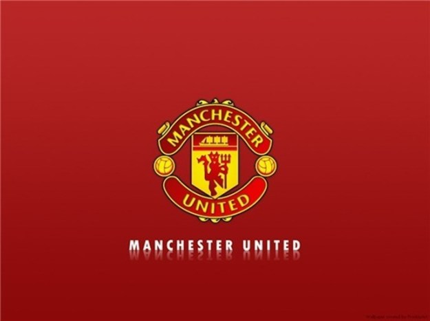

 오늘은 국내에서 가장 많은 팬덤을 보유하고 있는 맨체스터 유나이티드가 도대체 왜 ‘맹구‘라고 불리는지에 대해서 알아보도록 하자.
인식도 좋고 가장 잘 알려진 축구팀입니다. 과거에 '퍼거슨'시절의 맨유는 우승을 밥먹듯이 하던 명문팀이었습니다. ... 퍼거슨 이후 모예스감독이 지휘봉을 잡은뒤로 9위까지 떨어지게 되는데요. 이후로 짱구에서 맹한 캐릭터를 맡고있는 '맹구'라는 별명이 붙게 된것입니다.